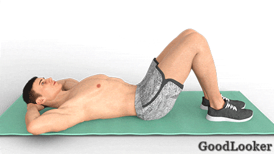
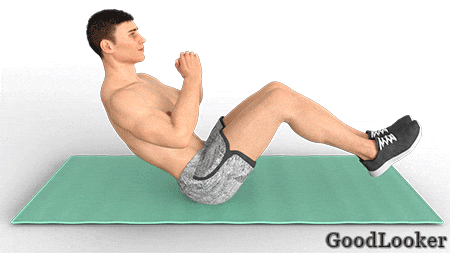
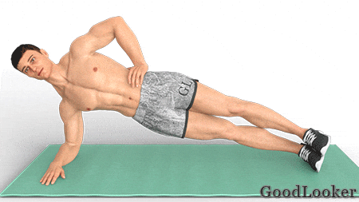
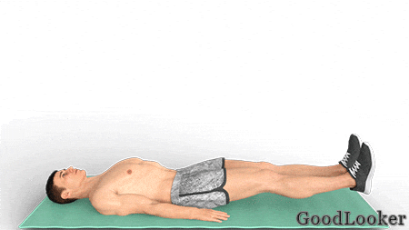
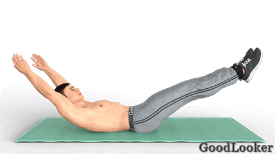
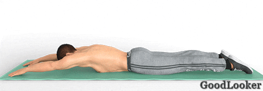
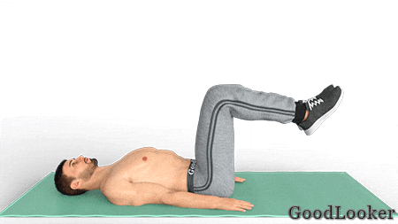
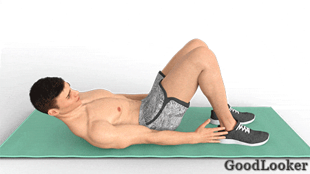
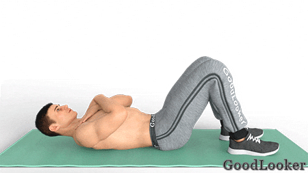
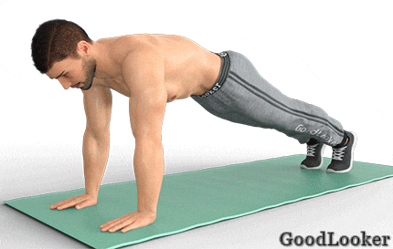

В конце каждой тренировки выполняйте один из комплексов на пресс, представленных ниже. Если будете тренироваться регулярно, то кубики на животе вам обеспечены!
Выполняйте каждое упражнение 15-20 раз, повторите упражнения в 3 круга.
Лягте на спину, согните ноги в коленях. Руки расположите за головой. Отрывайте от пола лопатки, не сгибаясь в пояснице. Почувствуйте, как напрягается верх прямой мышцы живота. Скручивания – самое простое упражнение на пресс, которое можно включать в каждую силовую тренировку для мужчин дома.

Сядьте на пол и слегка отклонитесь назад, немного скругляя спину в пояснице. Поднимите ноги, не разгибая коленей. Бедра и спина находятся под одинаковым углом по отношению к полу. Напрягите пресс и соедините ладони вместе. Поочередно поворачивайте корпус и руки вправо-влево, ощущая, как работает пресс. Чередуйте «русский твист» с другими упражнениями на косые мышцы во время силовой тренировки фулбоди в домашних условиях.

Для выполнения встаньте в планку на локтях и затем повернитесь на правый бок, чтобы одна нога лежала на другой. Не провисайте телом вниз, сохраняйте ровную линию от затылка до пяток. Начните поднимать и опускать таз вверх-вниз, продолжая опираться на предплечье и одноименную стопу. Не забудьте повторить боковую планку для другой стороны.

Выполняйте каждое упражнение 15-20 раз, повторите упражнения в 3 круга.
Лягте на спину и приподнимите обе ноги на 45 градусов вверх. Правую согните в колене, левую оставьте в этом же положении. Руки положите за голову. Поднимите корпус вверх и повернитесь в правую сторону, касаясь левым локтем колена согнутой правой ноги. Затем поменяйте ноги и повернитесь влево, касаясь правым локтем колена левой ноги. Упражнение эффективно прокачивает косые мышцы пресса и хорошо вписывается в силовую тренировку для мужчин дома.
Лягте на спину, затылок, лопатки и ягодицы касаются пола, руки лежат на полу. Поднимайте поочередно правую и левую ногу вверх, до напряжения пресса, затем опускайте их в исходное положение. Во время упражнения вы должны чувствовать, как работает нижняя часть пресса. Включайте это несложное упражнение в силовую тренировку фулбоди, чтобы хорошо прокачать прямую мышцу живота.

Лягте на спину, вытяните прямые руки позади себя. Поднимите прямые ноги на 45 градусов, приподнимите голову, руки и верх корпуса до лопаток. Притягивайте ноги к груди, сгибая их в коленях, обхватывайте их руками и возвращайтесь в начальное положение.

Лягте на живот и вытяните руки вперед, ноги спокойно лежат на полу. Поднимите руки, голову, верх корпуса и ноги вверх, касаясь пола только животом и тазом. Фиксируйте положение несколько секунд перед тем, как вернуться в начальную позицию. Включайте упражнение «супермен» в силовую тренировку для мужчин, чтобы прокачать не только пресс, но и спину, а также укрепить ноги и ягодицы.

Выполняйте каждое упражнение 15-20 раз, повторите упражнения в 3 круга.
Лягте на спину, руки лежат вдоль тела. Поднимите ноги вверх и согните их в коленях. Оторвите таз от пола и перенесите колени к груди, скручиваясь в пояснице. Не отрывайте рук и спины от пола. Работает только поясничный отдел и пресс. Если у вас есть спортивная скамья, то выполняйте упражнение на ней, так проще удерживать равновесие, держась за лавку руками.

Лягте на пол и согните ноги в коленях. Поднимите голову и верх корпуса, оторвите руки от пола и сделайте наклон влево, стараясь коснуться ладонью стопы. Затем повторите аналогичный наклон вправо. Не отрывайте спину и таз от пола, скручивайтесь только в корпусе, чтобы работали косые мышцы.

Лягте на пол, согните ноги в коленях, руки сложите у груди. Поднимите корпус вверх, касаясь бедер локтями. В конечной точке корпус должен быть вертикален. Затем опуститесь вниз. Поднимайтесь за счет мышц пресса, чтобы минимизировать нагрузку на поясницу. Ноги не ставьте близко к тазу, иначе будет сложно удержать равновесие. При подъеме корпуса можно легко скручиваться в пояснице, что поможет не нагружать ее слишком сильно.

Встаньте в планку, ладони находятся под плечевыми суставами, вес тела равномерно распределен между руками и ногами. Согните левую ногу в колене и коснитесь левого локтя, затем сделайте то же для правой ноги и правого локтя. Выполняйте упражнение динамично, если работаете на похудение, или медленно, если тренируетесь на рельеф.
